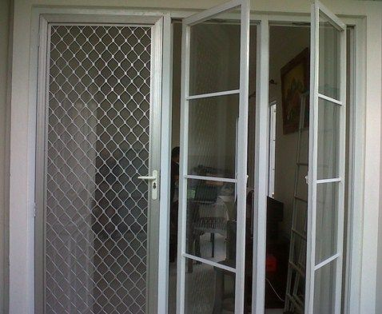

Jual Pintu Aluminium di Palopo – yaitu komponen penting dari sebuah rumah, selain sebagai jalan masuk keluar masuk juga sebagai metode pengaman atau pelindung bagi rumah Anda. Perlu pertimbangan yang matang untuk memilih pintu yang layak untuk rumah Anda. Pada umumnya pintu terbuat dari bahan seperti kayu, UPVC, besi, Almunium dan lain sebagainya. Tiap bahan mempunyai keunggulannya masing-masing. Contohnya bahan Almunium mempunyai banyak sekali keunggulan diperbandingkan dengan bahan kayu atau semacamnya. Keunggulan kusen pintu almunium adalah ketika musim hujan atau musim kemarau Anda tak perlu kuatir karena pintu alumunium tak akan memuai, menyusut atau berubah bentuk.
Selain itu dengan menggunakan bahan aluminium Anda akan terbebas dari hama rayap, karena pintu aluminium telah jelas anti-rayap. Pintu almunium diwarnai dengan cara Powder Coating yang lebih bendung warna diperbandingkan dengan kayu. Powder coating yang bagus akan bisa menjamin warna Jendela Almunium tak mudah pudar.
Pintu Sliding
Sebagian dari Anda yang membaca artikel ini pasti sudah tahu pintu alumunium. Sebab pintu dengan bahan alumunium telah banyak sekali yang menggunakannya untuk rumah, apartemen, gedung, perkantoran, partisi dan masih banyak lagi. Pintu almunium memang cocok untuk segala jenis rumah, baik itu rumah dengan figur klasik atau bahkan rumah dengan figur minimalis. Pintu Almunium menawarkan kemudahan dalam membentuk contoh pintu atau jendela. Segala tergantung dari selera Anda dan gaya arsitektur rumah Anda.
Penjual kusen pintu aluminium sendiri telah banyak, dan harga juga bersaing tergantung kualitas dan jenis profil yang diterapkan. Sebelum Anda membeli Kusen Aluminium berikut adalah keunggulan dan kekurangan dari kusen aluminium itu.
Keunggulan Pintu Aluminium
Kenggulan produk dibawah ini merupakan berdasarkan standar alumunium windownesia. Windownesia merupakan brand jendela dan pintu almunium import yang memiliki kwalitas yang lebih bagus dibandingi Almunium lokal yang berada dipasaran.
Keunggulannya
- Tidak Korosi : Alumunium telah familiar dengan kelebihannya merupakan anti-karat. Jadi pantas untuk rumah Anda yang berada di tepi pantai yang memiliki kadar asam yang tinggi.
- Anti-rayap : Tentu saja bahan almunium tak akan dapat dimakan oleh rayap. Tak seperti bahan kayu yang gampang dimakan rayap.
- Bendung Seluruh Cuaca : Pintu alumunium bendung menghadapi bermacam-macam cuaca ekstrim seperti di Indonesia. Bendung terhadap cahaya sang surya dan hujan terus menerus.
- Warna Bendung Lama : Dengan metode pewarnaan powder coating menghasilkan warna almunium lebih tahan lama dan tak mudah pudar.
- Kokoh : Bahan alumunium juga terkenal kokoh dan tidak lentur. Sesuai untuk pintu atau jendela dengan tinggi diatas rata-rata.
- Perawatan Gampang : Anda tidak perlu keluar banyak biaya untuk perawatan kusen alumunium karena telah memiliki banyak keunggulan. Perawatannya cukup Anda bersihkan terstruktur dikala Pintu almunium terlihat kumal karena debu.
Tipe Pintu Aluminium
Dalam pemakaianya pintu alumunium mempunyai beberapa tipe yang sudah banyak kita kenal. Disii kami bedakan menjadi beberapa varian yakni pintu almunium menurut macam material penyokongnya, menurut tipe bukaanya, berdasarkan warnanya dan menurut tipe profil yang diterapkan.
Pintu Almunium menurut Jenis material pendukungnya.
- Pintu Alumunium Kaca – Pintu almunium yang mengaplikasikan kaca sudah banyak sekali yang menggukannya. Dan memang banyak sekali peminatnya. Material kaca yaitu material pendukung yang telah umum diaplikasikan untuk pintu atau jendela rumah. Selain itu kaca juga dapat digunakan sebagai partisi kantor atau sebagai pembungkus gedung tinggi. Sebab dengan menerapkan kaca kita dapat menghemat daya listrik karena dapat menggunakan sinar sang surya sebagai sumber sinar. Selain itu juga dengan kaca kita dapat mengetahui keadaan diluar ruangan tanpa sepatutnya membuka Jendela.
- Pintu Alumunium kasa Nyamuk – Pintu ragam ini lebih diketahui dengan nama pintu expanda. Pintu macam ini berfungsi untuk mencegah nyamuk masuk ke dalam ruangan. Selain pintu itu pintu ini juga sebagai pintu untuk mencegah pencuri masuk sebab memiliki kawat nyamuk yang kuat dan tak mudah di rusak.
- Pintu Aluminium Panel – Pintu aluminium variasi ini belum banyak dijumpai karena harganya memang sedikit lebih mahal dibanding kaca polos. Karena dimaksud panel almunium yaitu isi dalam pintu tersebut atau penganti kaca. Jadi pintu keseluruhan berbahan baku dari alumunium mulai dari bingkainya maupun isi atau badan pintunya. Pintu alumunium panel lazim diterapkan di kamar mandi.
- Pintu Almunium Jalusi – Jalusi atau dalam bahasa inggrisnya ucap juga lovre yakni bahan penyokong untuk pintu almunium sebagai ventilasi keluar masuknya udara. Dengan pintu kondisi tertutup kalau menerapkan jalusi, udara akan tetap bisa keluar masuk lewat jalusi.
- Pintu folding Almunium
Pintu Aluminium berdasarkan Tipe bukaannya.
- Pintu Lipat – Nama Lain dari pintu lipat yakni pintu folding aluminium. Tipe pintu ini dibuka dengan sistem dilipat ke salah satu sisi atau dapat dua sisi. Sebab modelnya dilipat minimal daun pintunya adalah 2 daun. Pintu Lipat banyak digunakan sebagai penyekat antara dua ruangan. Karena paling kerap diterapkan merupakan penyekat antara ruang keluarga ke taman. Sebab jika suatu saat ada acara Pintu bisa dibuka sehingga ruangan akan menjadi lebih luas.
- Pintu Alumunium Swing – Pintu swing ragam pintu yang paling banyak diterapkan di Indonesia. Jenis pintu ini sering kali